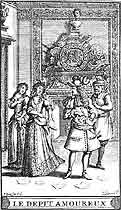

1656
• MOLI�RE
26 f�vrier : S�jour de quelques mois � Narbonne.
9 d�cembre : La troupe est � Agen.
16 d�cembre : � B�ziers est repr�sent� pour la premi�re fois Le D�pit amoureux.
20 d�cembre : Spectaculairement converti, le prince de Conti fait en sorte que l'assembl�e des �tats de Languedoc supprime la subvention de 6000 livres accord�e l'ann�e pr�c�dente � la troupe. Il sera d�sormais un ennemi acharn� des com�diens et du th��tre.
• POLITIQUE ET SOCI�T�
Fondation de l'H�pital g�n�ral de Paris (la Salp�tri�re) pour l'enfermement des mendiants, des asociaux, des prostitu�es, des ali�n�s. Nombreuses fondations en province jusqu'en 1690.
• ARTS, SCIENCES ET RELIGION
Pascal commence � publier Les Provinciales.
